Военная техника
рено - русский
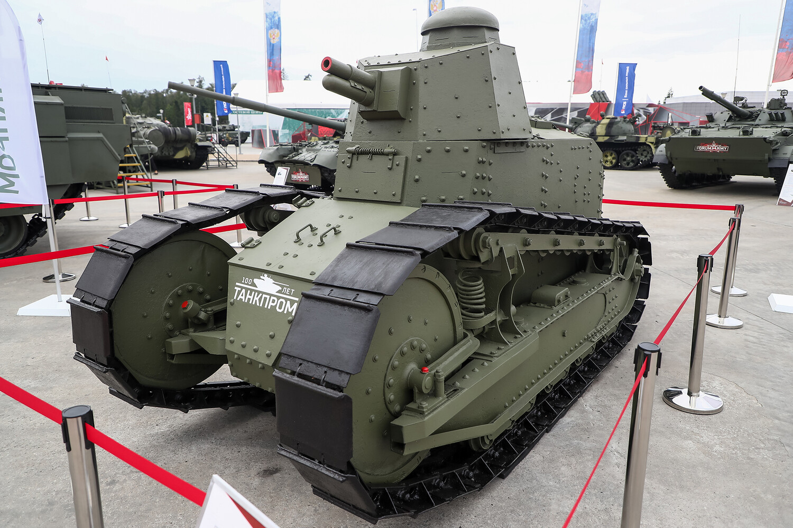
«Рено Русский» — первый танк, состоявший на вооружении Красной Армии. Это были трофейные или сдавшиеся французские танки «Рено FT-17», захваченные в годы Гражданской войны. Они использовались с 1919 года практически без изменений, лишь с незначительными доработками.
Танк имел классическую компоновку с вращающейся башней, экипаж 2 человека, броню 6–16 мм и скорость до 7–8 км/ч. Вооружался либо 37-мм пушкой, либо пулемётом «Гочкис». «Рено Русский» активно применялся в боях с белогвардейцами и интервентами, а также в Советско-польской войне. Эти машины оставались в строю до конца 1930-х годов и стали базой для подготовки первых советских танкистов и инженеров.
мс - 1
МС-1 («Малый сопровождения», первый) — первый советский серийный танк, принятый на вооружение в 1927 году. Он создавался на основе французского FT-17, но получил ряд усовершенствований: более мощный двигатель, улучшенную ходовую часть и увеличенную скорость (до 16 км/ч).
Танк имел классическую компоновку с вращающейся башней и вооружался 37-мм пушкой или пулемётом. Броня (8–16 мм) надёжно защищала от пуль и осколков. МС-1 стал основой для развития советского танкостроения, участвовал в конфликте на КВЖД (1929 год) и оставался в строю до начала Великой Отечественной войны, где использовался как неподвижные огневые точки.
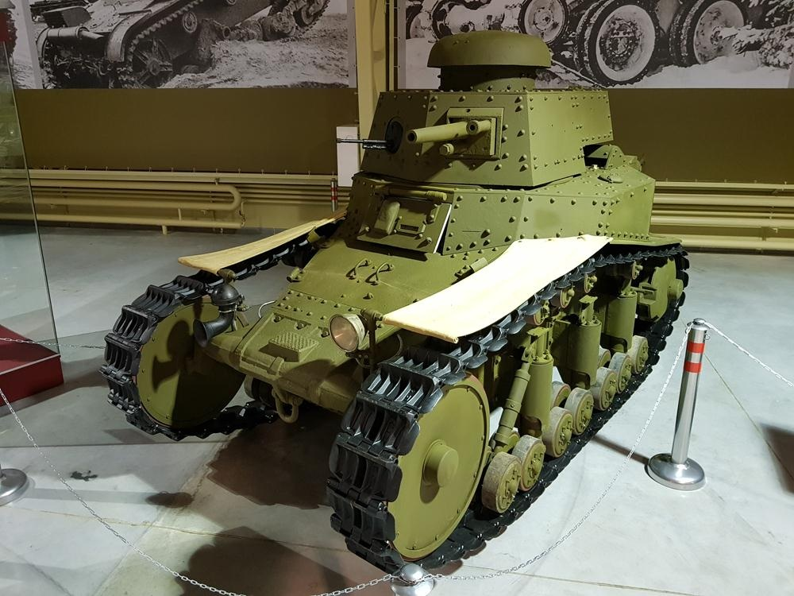
т - 26
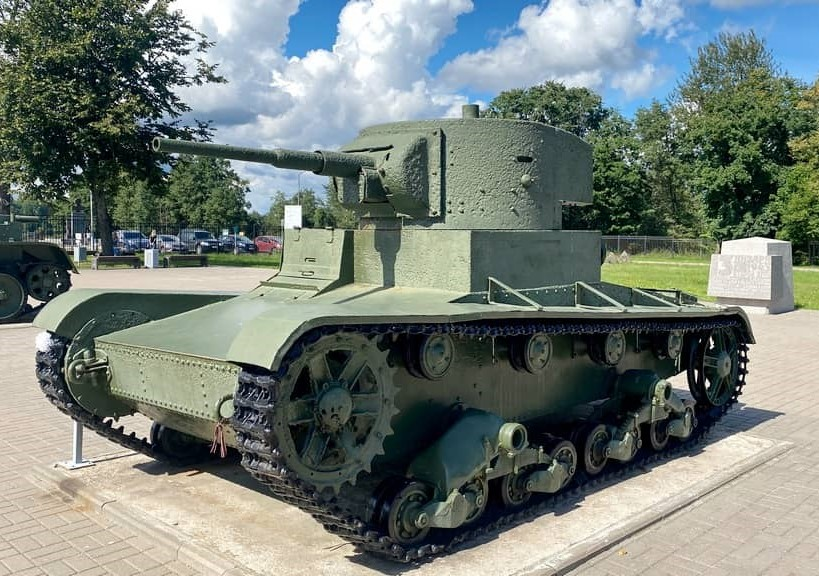
Т-26 — советский лёгкий танк 1930-х годов, ставший самым массовым танком Красной Армии к началу Великой Отечественной войны. Он создавался на основе британского «Виккерс 6-тонный», но получил множество отечественных доработок. Двухбашенная ранняя версия несла два пулемёта, а классическая однобашенная — 45-мм пушку.
Скорость танка составляла около 30 км/ч, броня — 15 мм, что было достаточно для своего времени. Т-26 активно участвовал в Испании, на Халхин-Голе, в Зимней и Великой Отечественной войнах. Несмотря на моральное устаревание к 1941 году, эти танки выдерживали основные удары первых месяцев войны, а на отдельных участках их удавалось использовать вплоть до 1945 года на Дальнем Востоке.
т - 27
Т-27 — советская танкетка начала 1930-х годов, созданная на основе британской «Карден-Лойд Mk VI». Она предназначалась для разведки, связи и сопровождения войск. Экипаж состоял из двух человек, а боевая масса составляла всего 2,7 тонны.
Броня (6–10 мм) защищала лишь от пуль и осколков, а вооружение — один 7,62-мм пулемёт ДТ. Скорость по шоссе достигала 40 км/ч. Т-27 стала первой массовой бронемашиной Советского Союза, выпускавшейся до 1933 года. Хотя к концу 1930-х она устарела, её опыт позволил советским инженерам накопить знания для создания более совершенных лёгких танков и плавающих машин.
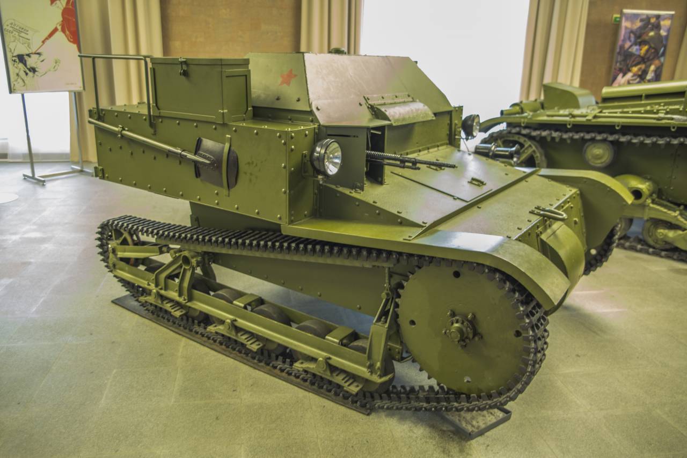
бт - 5
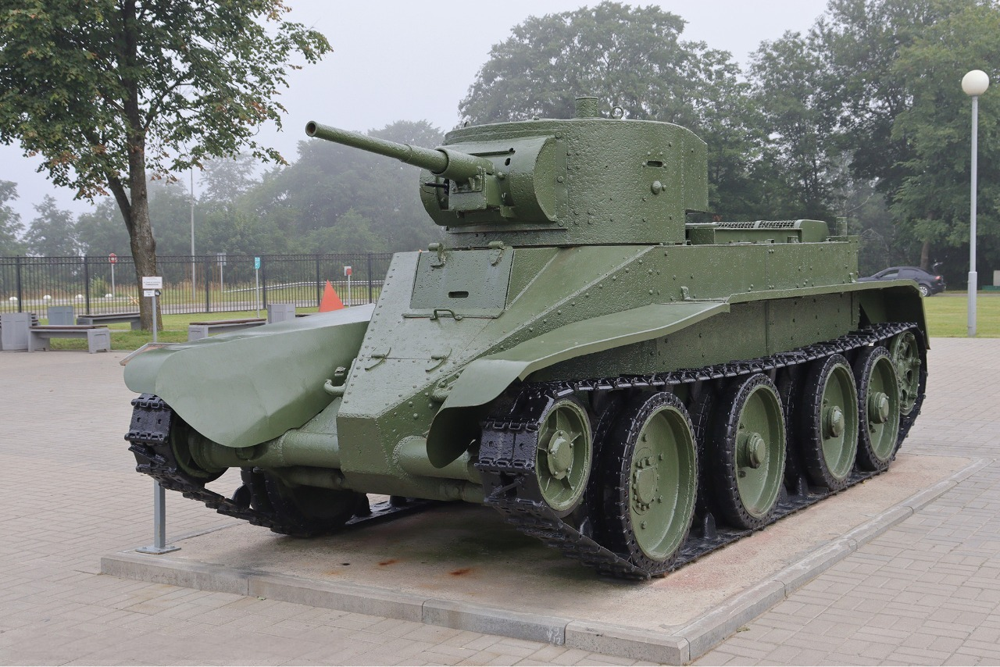
БТ-5 — советский лёгкий колёсно-гусеничный танк 1930-х, вершина серии «БТ». Главная «изюминка» — ходовая часть, позволяющая двигаться как на гусеницах, так и на опорных катках (по шоссе), снимая резиновые бандажи. Скорость — до 72 км/ч на колёсах и 52 км/ч на гусеницах.
Вместо спаренной пулемётной установки предшественника, БТ-5 получил башню увеличенного размера с мощным 45-мм орудием 20К и спаренным пулемётом ДТ. Танк сочетал в себе «броневую быстроту» и огневую мощь, превосходя большинство иностранных аналогов. Однако лобовая броня в 13 мм уже к началу Второй мировой была недостаточной. Тем не менее, БТ-5 успешно воевал в Испании, на Халхин-Голе и в Зимней войне, а на раннем этапе Великой Отечественной стал настоящей «рабочей лошадкой» механизированных корпусов Красной Армии.
т - 37а
Т-37А — советский малый плавающий танк 1930-х годов, созданный на основе зарубежных разработок. Он стал первым в мире серийным плавающим танком с возможностью десантирования с воды. Экипаж состоял из двух человек, боевая масса — около 3,2 тонны.
Броня (3–9 мм) защищала лишь от стрелкового оружия, вооружение — один 7,62-мм пулемёт ДТ. На воде танк двигался с помощью гребного винта, развивая скорость до 6 км/ч (по суше — до 40 км/ч). Т-37А активно использовался для разведки и связи в предвоенные годы и в начальный период Великой Отечественной войны, но из-за слабой бронезащиты и вооружения быстро уступил место более совершенным плавающим машинам.
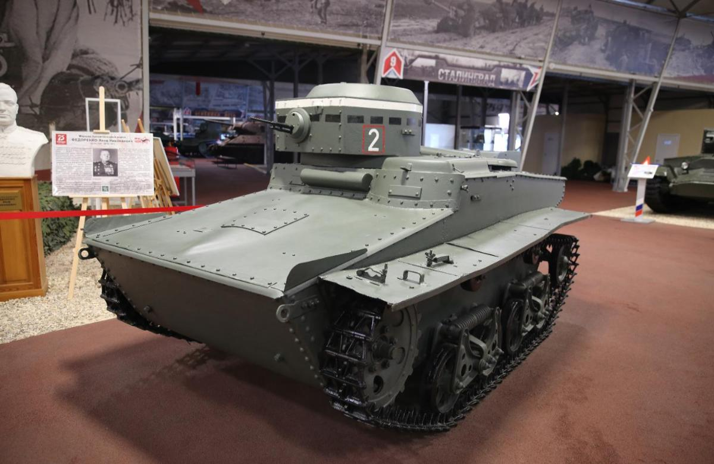
т - 28
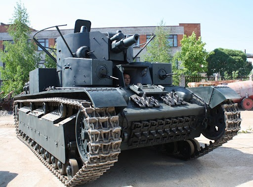
Т-28 — советский средний трёхбашенный танк 1930-х годов, предназначенный для прорыва укреплённых полос. Он имел необычную компоновку: в центральной башне размещалась 76-мм пушка, а в двух малых передних — по пулемёту. Экипаж состоял из 6 человек, боевая масса достигала 25–28 тонн.
Броня танка составляла 20–30 мм, скорость — до 37 км/ч. Т-28 успешно применялся в Зимней войне с Финляндией, где показал эффективность при штурме «линии Маннергейма». К началу Великой Отечественной войны он считался устаревшим, но использовался в боях 1941 года. Несколько сохранившихся машин дожили до парада Победы в Москве.
т - 35
Т-35 — советский тяжёлый пятибашенный танк 1930-х годов, символ военной мощи своего времени. Он имел уникальную компоновку: пять башен располагались в два яруса. В центральной башне стояла 76-мм пушка, в четырёх малых — 45-мм пушки и пулемёты. Экипаж состоял из 11 человек, боевая масса достигала 50 тонн.
Броня составляла 20–30 мм, скорость — всего 28–30 км/ч. Т-35 впечатлял размерами и внешним видом, но на практике страдал от низкой подвижности, ненадёжности и слабой брони. Он участвовал в начальном этапе Великой Отечественной войны, но почти все машины были потеряны из-за поломок или боёв. До наших дней сохранился единственный экземпляр в бронетанковом музее в Кубинке.
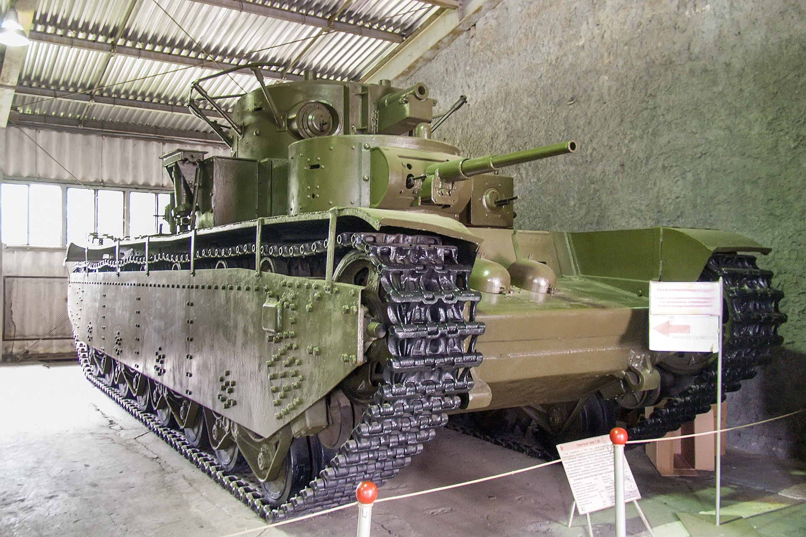
бт - 7
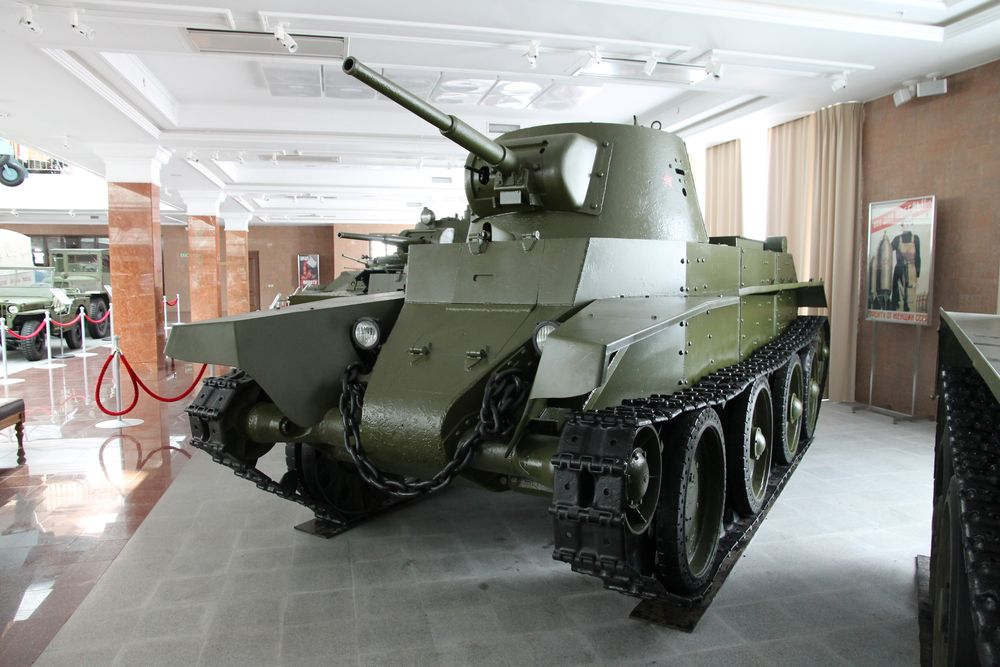
БТ-7 — советский лёгкий колёсно-гусеничный танк, последний и самый совершенный в серии «БТ» (Быстроходные танки). Он сохранил уникальную возможность движения как на гусеницах, так и на колёсах, но получил более мощный двигатель и улучшенную броню (корпус до 22 мм вместо 13 мм на БТ-5). Максимальная скорость достигала 53 км/ч на гусеницах и 73 км/ч на колёсах.
Вооружение состояло из 45-мм пушки 20К и спаренного пулемёта ДТ, некоторые модификации получали дополнительный зенитный пулемёт. Башня была конической формы, что повышало снарядостойкость. БТ-7 активно применялся в Испании, на Халхин-Голе, в Зимней и Великой Отечественной войнах. На начало войны он оставался одним из самых скоростных танков в мире, но слабая броня и устаревшая ходовая часть снижали его боевую ценность.
т - 40
Т-40 — советский малый плавающий разведывательный танк конца 1930-х — начала 1940-х годов. Он стал развитием Т-37А, но получил более совершенную конструкцию: лучшую форму корпуса, повышенную плавучесть и дополнительный винтовой движитель. Экипаж — 2 человека, боевая масса — около 5,5 тонн.
Броня была усилена до 13 мм в лобовой части, что защищало от крупнокалиберных пуль. Вооружение состояло из одного 12,7-мм крупнокалиберного пулемёта ДШК и одного 7,62-мм ДТ. По суше Т-40 развивал скорость до 45 км/ч, на воде — до 6 км/ч. Танк применялся в начальный период Великой Отечественной войны, но из-за потери производственных мощностей его выпуск быстро прекратили, а шасси использовали для создания самоходки ЗИС-30.
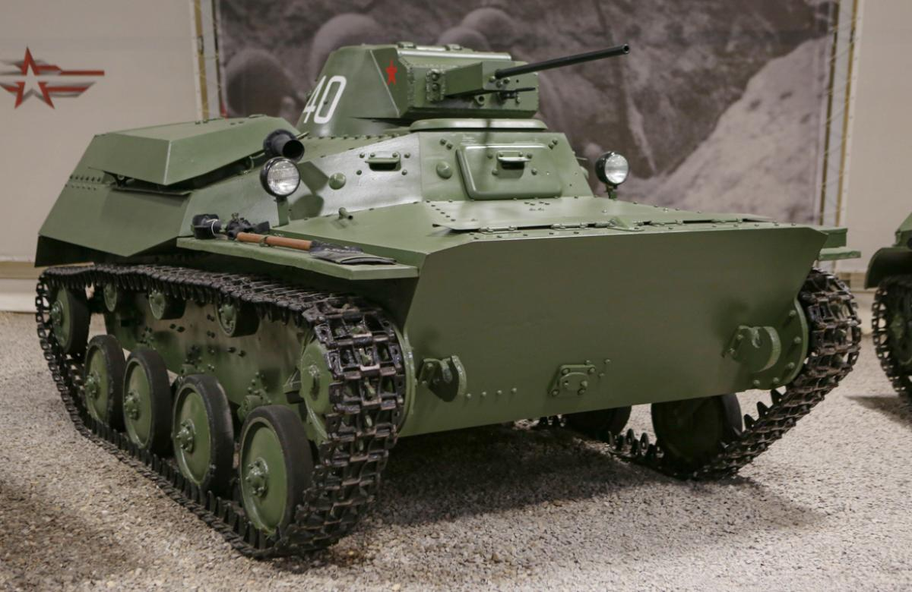
т - 60
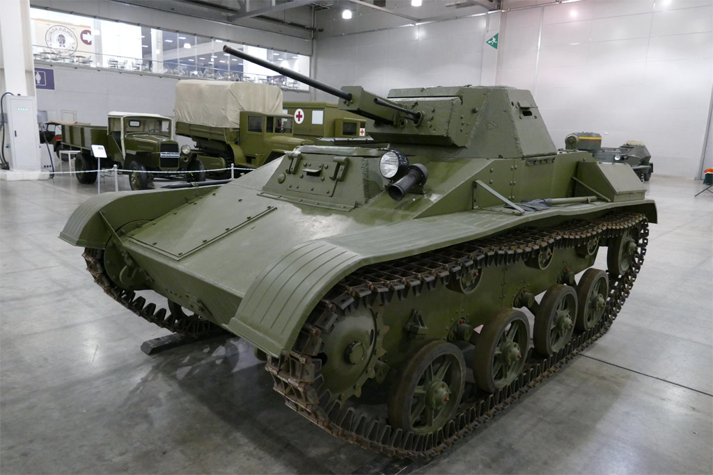
Т-60 — советский лёгкий разведывательный танк периода Великой Отечественной войны, созданный в экстренном порядке в 1941 году для восполнения огромных потерь. Он пришёл на смену Т-40, но был неплавающим и имел упрощённую конструкцию. Экипаж состоял из двух человек, боевая масса — около 5,8 тонны.
Броня (до 20 мм в лобовой части) выдерживала попадания пуль и мелких осколков. Вооружение — 20-мм автоматическая пушка ТНШ-20 и спаренный пулемёт ДТ. Скорость достигала 45 км/ч. Т-60 массово применялся в 1941–1943 годах как разведывательный, транспортный и танк сопровождения пехоты. Однако слабое вооружение и броня делали его уязвимым, и к 1943 году он был снят с производства, уступив место более мощному Т-70.
т - 70
Т-70 — советский лёгкий танк периода Великой Отечественной войны, созданный в 1942 году на смену Т-60. Он имел усиленную броню (до 35–45 мм в лобовой части) и более мощное вооружение — 45-мм пушку. Экипаж состоял из двух человек (механик-водитель и командир, выполнявший также роль наводчика и заряжающего).
Скорость танка достигала 45 км/ч, боевая масса — около 9,2 тонны. Т-70 активно применялся на всех фронтах с 1942 по 1944 год, особенно в разведке и сопровождении пехоты. Однако из-за одноместной башни командир был перегружен обязанностями, что снижало эффективность в бою. Тем не менее, танк оказался удачным для своего класса, а его шасси использовалось для создания самоходной установки СУ-76.
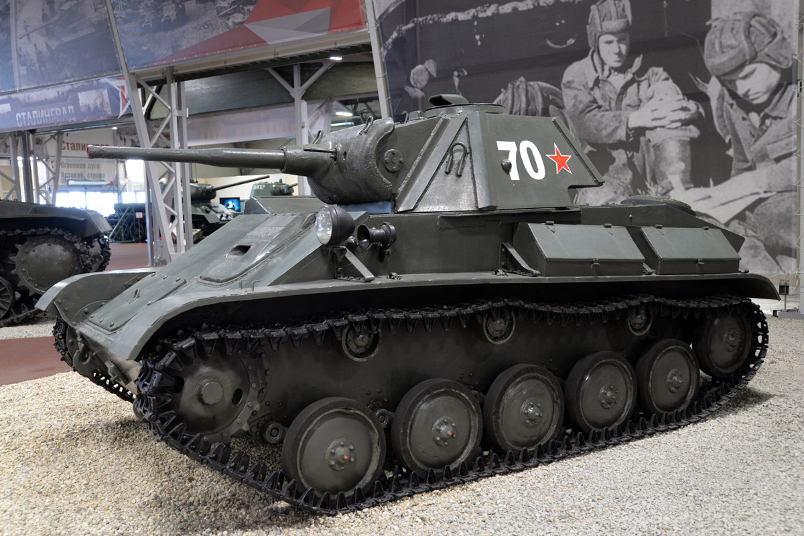
кв - 1
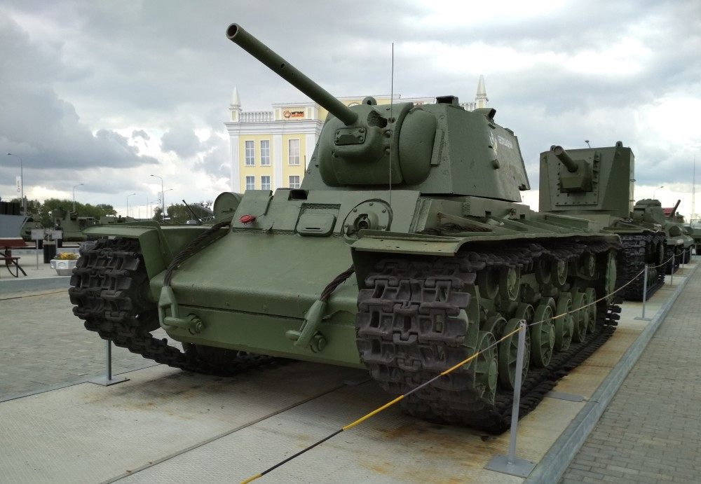
КВ-1 (Клим Ворошилов) — советский тяжёлый танк прорыва, созданный в 1939 году и ставший основой тяжёлого танкостроения СССР в начальный период Великой Отечественной войны. На момент появления он не имел аналогов в мире по бронированию: лоб корпуса достигал 75 мм, а некоторые модификации — до 100–120 мм, что делало его практически неуязвимым для большинства противотанковых орудий вермахта.
Вооружение состояло из 76-мм пушки Ф-32 (позже ЗИС-5) и трёх пулемётов ДТ. Экипаж — 5 человек, боевая масса — около 47–52 тонн, скорость — до 35 км/ч. КВ-1 массово применялся в 1941–1943 годах, став легендой благодаря эпизодам, когда один танк сдерживал целые немецкие колонны. Однако к 1943 году его вооружение перестало быть достаточным, и на смену ему пришёл тяжёлый танк ИС.
т - 34 (образца 1940)
Т-34 образца 1940 года — первый серийный вариант легендарного советского среднего танка, запущенный в производство в 1940 году. Его главными революционными решениями стали мощная наклонная броня (лоб корпуса — 45 мм под углом 60 градусов) и широкая гусеница, обеспечивавшая отличную проходимость. Экипаж состоял из 4 человек, боевая масса — около 26 тонн.
Вооружение — 76-мм пушка Л-11 (не самая надёжная) и два пулемёта ДТ. Скорость достигала 54 км/ч. Танк сочетал в себе противоснарядное бронирование, высокую подвижность и мощное орудие, что делало его лучшим средним танком мира на начало войны. Однако выпуск 1940 года был небольшим (около 115 машин), а пушка Л-11 имела конструктивные недостатки, которые устранили в следующей модификации — Т-34 образца 1941 года с орудием Ф-34.
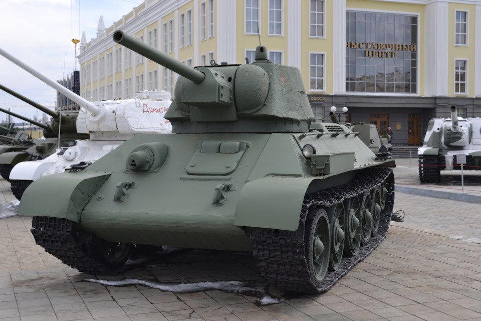
т - 34-85
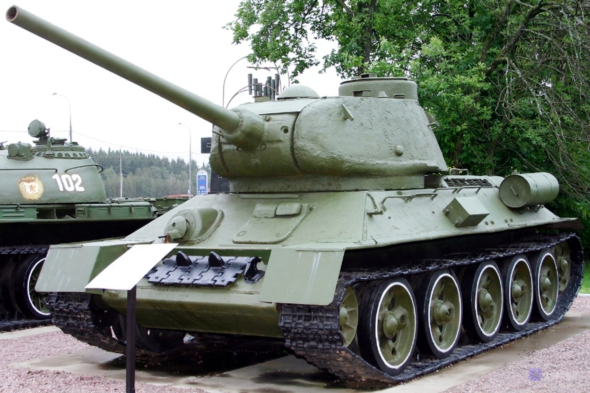
Т-34-85 — советский средний танк, созданный в 1943 году как глубокая модернизация легендарного Т-34. Главным нововведением стала просторная трёхместная башня с мощной 85-мм пушкой ЗИС-С-53, что позволило эффективно бороться с новыми немецкими «Тиграми» и «Пантерами». Экипаж увеличился до 5 человек (ранее было 4), что разгрузило командира.
Броня корпуса (45 мм с наклоном) и башни (до 90 мм в лобовой части) обеспечивала хорошую защиту. Скорость осталась высокой — до 55 км/ч, боевая масса — около 32 тонн. Т-34-85 стал лучшим средним танком Второй мировой войны, сочетая надёжность, подвижность и огневую мощь. Он массово выпускался с 1944 года, участвовал во всех финальных операциях Красной Армии и состоял на вооружении многих стран до 1970-х годов.
кв - 85
КВ-85 — советский тяжёлый танк, созданный в 1943 году как временная мера для борьбы с немецкими «Тиграми» и «Пантерами». На шасси скоростного КВ-1С установили новую литую башню с 85-мм пушкой Д-5Т, что заметно повысило огневую мощь по сравнению с 76-мм орудием. Экипаж состоял из 4 человек, боевая масса — около 46 тонн.
Броня корпуса осталась на уровне 75 мм, башня получила усиление до 100 мм в лобовой части. Скорость — до 42 км/ч. КВ-85 выпускался недолго (осень–зима 1943 года) и в небольшом количестве (около 150 машин). Он успел повоевать в конце 1943 — начале 1944 года, но быстро уступил место более совершенному тяжёлому танку ИС-1. Тем не менее, КВ-85 стал важным звеном в эволюции советских тяжёлых танков.
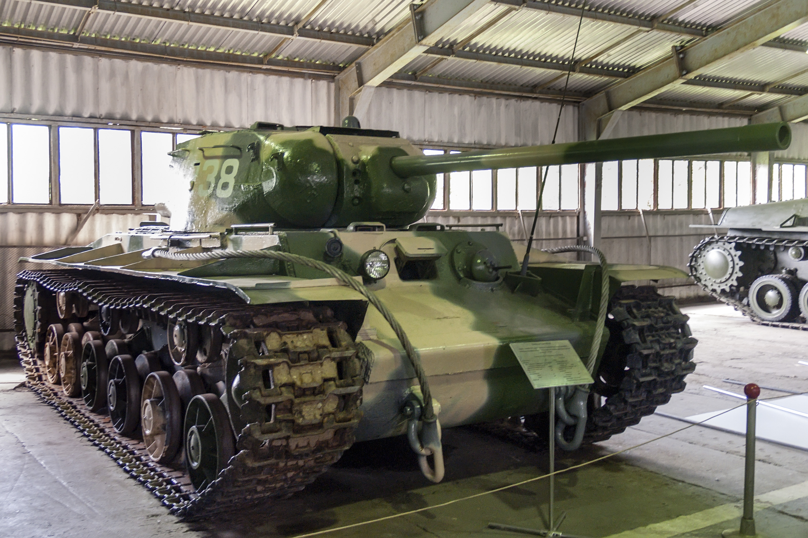
ис - 1
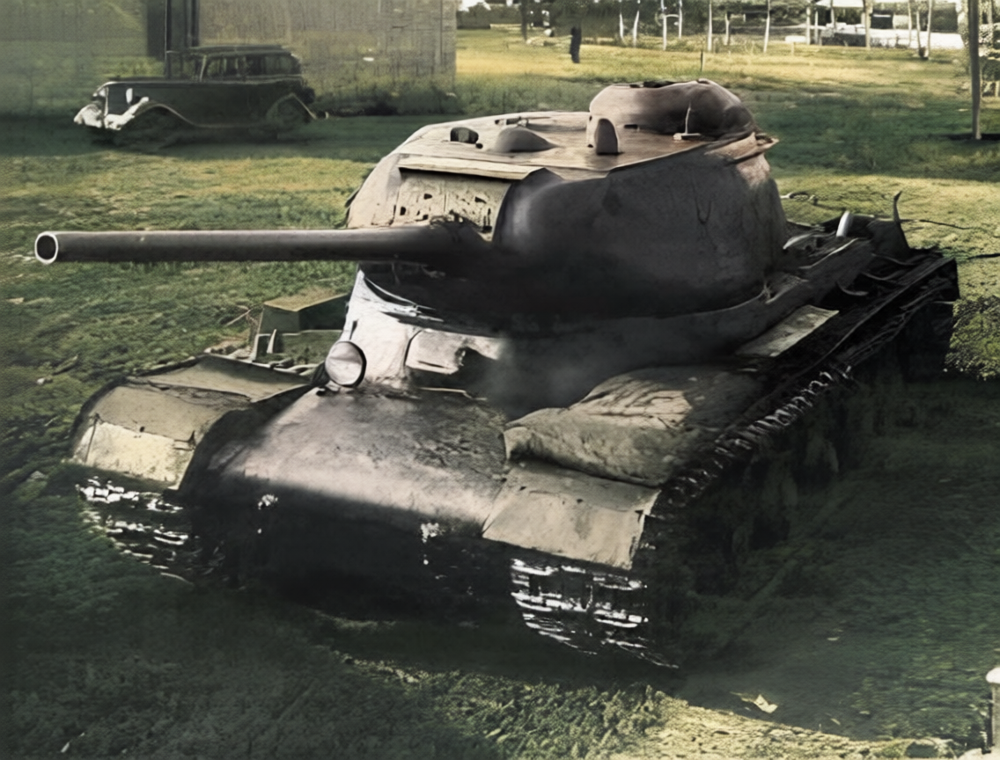
ИС-1 (Иосиф Сталин) — советский тяжёлый танк, созданный в 1943 году для замены КВ-1. Он получил более рациональную броневую защиту (лоб корпуса — 60–120 мм, башня — до 100 мм) и новую ходовую часть, обеспечившую лучшую надёжность. Экипаж — 4 человека, боевая масса — около 44 тонн.
Вооружение первоначально состояло из 85-мм пушки Д-5Т, что было достаточно против «Пантер», но недостаточно против «Тигров» на больших дистанциях. Скорость достигала 40 км/ч. ИС-1 выпускался недолго (всего около 130 машин), так как уже в конце 1943 года на смену ему пришёл ИС-2 со 122-мм пушкой. Тем не менее, ИС-1 принял участие в боях 1944 года и стал важным этапом на пути к одному из лучших тяжёлых танков Второй мировой войны.
ис - 2
ИС-2 (Иосиф Сталин) — советский тяжёлый танк прорыва, созданный в 1943 году и ставший одним из сильнейших танков Второй мировой войны. Он пришёл на смену ИС-1, получив огромную 122-мм пушку Д-25Т, которая пробивала броню «Тигров» и «Пантер» с дистанции до 1500 метров, а также успешно уничтожала полевые укрепления. Экипаж — 4 человека, боевая масса — около 46 тонн.
Броня корпуса (60–120 мм с рациональными углами наклона) и литой башни (до 100 мм) обеспечивала надёжную защиту. Скорость — до 37 км/ч. Главным недостатком была низкая скорострельность (2–3 выстрела в минуту) из-за раздельного заряжания. ИС-2 массово применялся с 1944 года до конца войны, участвовал в штурмах Берлина и Кёнигсберга. Он считается классикой мирового танкостроения и состоял на вооружении многих стран до 1970-х годов.
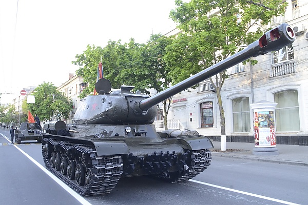
т - 44
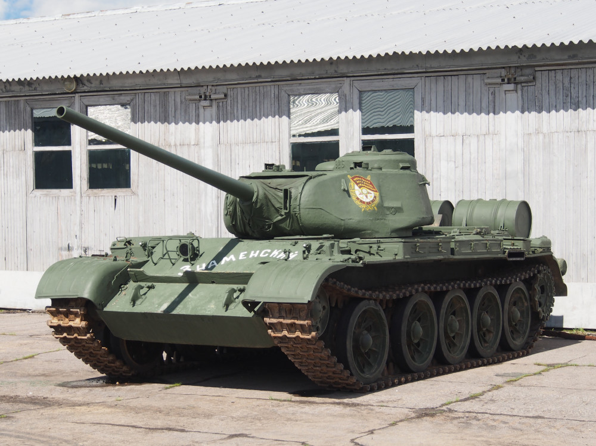
Т-44 — советский средний танк, созданный в 1944 году как развитие Т-34-85. Он получил принципиально новую компоновку: поперечное расположение двигателя, более низкий и узкий корпус, а также торсионную подвеску вместо свечной. Это позволило снизить силуэт и улучшить бронирование при той же массе. Экипаж — 4 человека, боевая масса — около 31 тонны.
Броня лба корпуса достигала 90 мм (под углом), башни — до 120 мм. Вооружение — 85-мм пушка ЗИС-С-53 (та же, что на поздних Т-34-85). Скорость — до 55 км/ч. Т-44 не успел принять участие во Второй мировой войне в значимых количествах (выпущено около 200 машин к маю 1945 года), но стал основой для послевоенного Т-54 — самого массового танка послевоенного времени. Т-44 состоял на вооружении до 1970-х годов.
ис - 3
ИС-3 — советский тяжёлый танк, созданный в 1944–1945 годах, вершина развития тяжёлых танков СССР времён Второй мировой. Главная особенность — «щучий нос» (верхняя лобовая деталь из двух сходящихся плит под большими углами) и литая башня улучшенной формы, что давало беспрецедентную противоснарядную стойкость. Экипаж — 4 человека, масса — около 45–49 тонн.
Вооружение — 122-мм пушка Д-25Т, аналогичная ИС-2, с раздельным заряжанием. Скорость — до 37 км/ч. ИС-3 не успел поучаствовать в боях Второй мировой войны, но был впервые публично показан на Параде Победы союзников в Берлине в сентябре 1945 года, вызвав шок у западных военных. Танк состоял на вооружении до 1970-х годов и оказал огромное влияние на послевоенное мировое танкостроение.
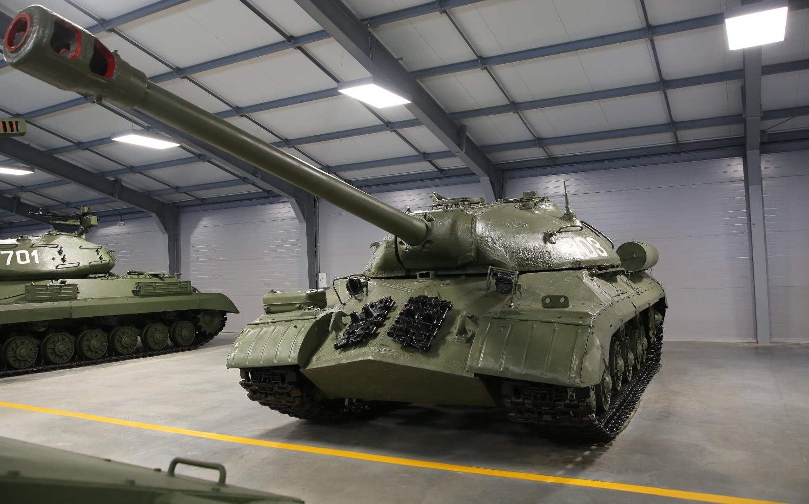
т - 54
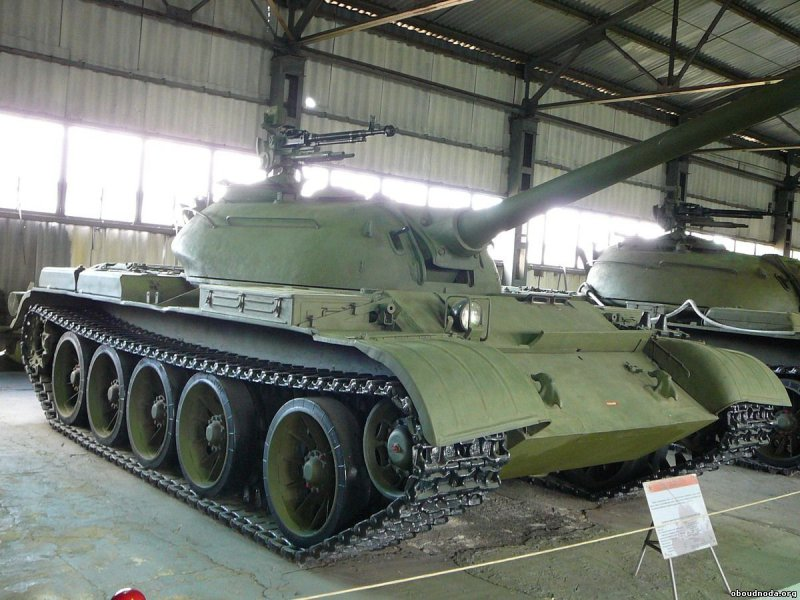
Т-54 — советский средний послевоенный танк, созданный в конце 1940-х годов на базе Т-44 и ставший одним из самых массовых танков в истории. Он получил мощное бронирование (лоб корпуса — 120 мм, башни — до 200 мм), надёжную торсионную подвеску и компактную компоновку. Экипаж — 4 человека, боевая масса — около 36 тонн.
Вооружение состояло из 100-мм нарезной пушки Д-10Т (позже Д-10ТГ) с отличной баллистикой, спаренного и зенитного пулемётов. Скорость — до 48 км/ч. Т-54 выпускался огромными сериями в СССР, Китае (как Тип 59), Польше и Чехословакии, участвовал в десятках конфликтов по всему миру. Он стал основой для следующего Т-55 и оставался в строю многих стран до конца XX века.
т - 10
Т-10 — советский тяжёлый танк, созданный в начале 1950-х годов и ставший последним серийным тяжёлым танком СССР. Он сочетал мощное бронирование (лоб корпуса до 120 мм с рациональными углами, литая башня до 200–250 мм) и высокую для своего класса подвижность. Экипаж — 4 человека, боевая масса — около 50–52 тонн.
Вооружение состояло из 122-мм пушки Д-25ТА (с двухкамерным дульным тормозом и эжектором) и спаренного пулемёта КПВТ. Скорость достигала 42 км/ч. Т-10 выпускался до 1966 года и состоял на вооружении до 1990-х годов, участвуя в парадах, но не в реальных боевых действиях. Он стал вершиной развития советских тяжёлых танков и последним в этой линейке — на смену пришли основные боевые танки (Т-64, Т-72, Т-80).
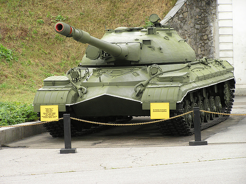
т - 55
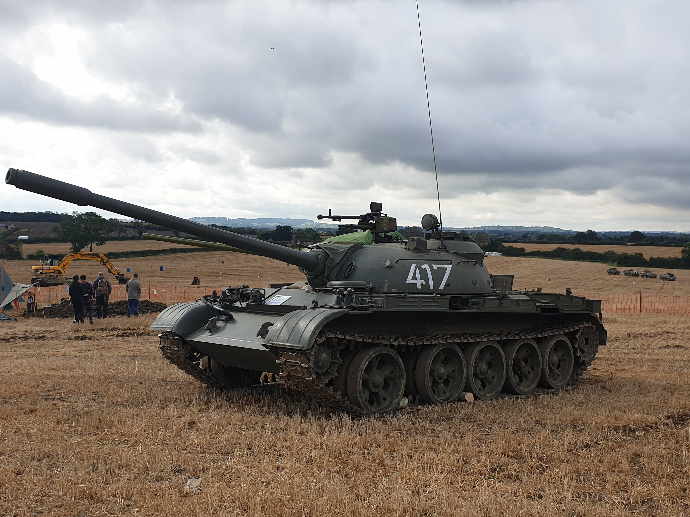
Т-55 — советский средний танк, созданный в 1958 году как глубокая модернизация Т-54. Главными нововведениями стали система противоатомной защиты (ПАЗ), более мощный двигатель, улучшенная ходовая часть и отказ от курсового пулемёта для увеличения боекомплекта. Экипаж — 4 человека, боевая масса — около 36 тонн.
Вооружение осталось прежним — 100-мм пушка Д-10Т2С (стабилизированная в двух плоскостях), спаренный и зенитный пулемёты. Скорость — до 50 км/ч. Т-55 стал самым массовым танком послевоенного периода (выпущено более 30 000 единиц только в СССР), состоял на вооружении десятков стран и участвовал в бесчисленных конфликтах по всему миру. Благодаря простоте, надёжности и ремонтопригодности он до сих пор используется в некоторых армиях.
т - 62
Т-62 — советский средний танк, созданный в начале 1960-х годов на базе Т-55. Главным отличием стала установка гладкоствольной 115-мм пушки 2А20 (вместо нарезной 100-мм), что позволило стрелять оперёнными подкалиберными снарядами с более высокой начальной скоростью и улучшенной бронепробиваемостью. Экипаж — 4 человека, боевая масса — около 37–40 тонн.
Броня была усилена (лоб корпуса до 100 мм), форма башни — литая, обтекаемая. Скорость — до 50 км/ч. Т-62 активно применялся в советских войсках, участвовал в конфликтах на Ближнем Востоке, в Афганистане и многих других. Он стал важным звеном в переходе от средних танков к основным боевым, хотя быстро уступил место более совершенному Т-64. Тем не менее, Т-62 до сих пор состоит на вооружении в некоторых странах.
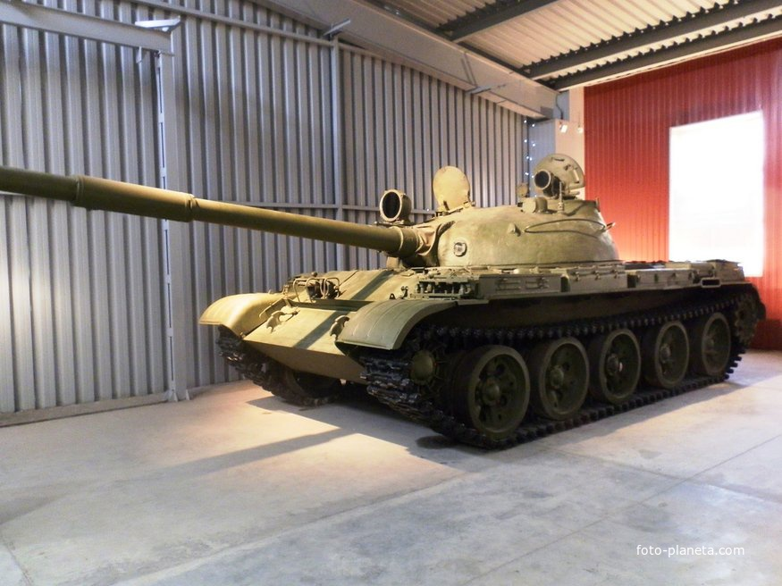
т - 64
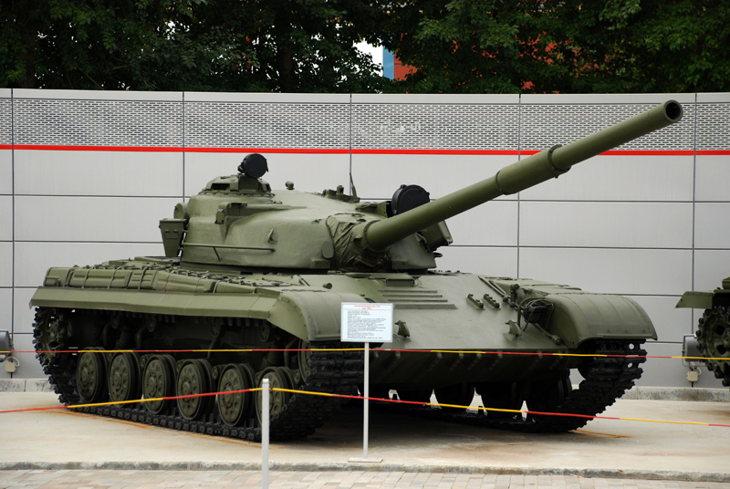
Т-64 — советский основной боевой танк, созданный в 1960-х годах и ставший революцией в мировом танкостроении. Он первым в мире получил многослойную комбинированную броню, автоматическую систему заряжания (что позволило сократить экипаж до 3 человек) и компактную компоновку с поперечным расположением двигателя. Боевая масса — около 38 тонн.
Вооружение состояло из 115-мм гладкоствольной пушки 2А21 (позже 125-мм 2А26), спаренного и зенитного пулемётов. Скорость — до 60 км/ч. Т-64 был очень сложным и дорогим, поэтому его не экспортировали за пределы СССР. Он состоял на вооружении элитных частей и послужил базой для более массовых Т-72 и Т-80, но сам остался в тени из-за своей секретности и капризности в эксплуатации.
т - 72
Т-72 — советский основной боевой танк, созданный в начале 1970-х годов как более массовая и дешёвая альтернатива сложному Т-64. Он сочетал в себе мощное вооружение (125-мм гладкоствольную пушку 2А46 с автоматом заряжания), комбинированную броню и высокую подвижность. Экипаж — 3 человека, боевая масса — около 41–46 тонн в зависимости от модификации.
Скорость достигала 60 км/ч. Т-72 стал самым массовым танком второго поколения в мире (выпущено более 25 000 единиц), состоял и до сих пор состоит на вооружении десятков стран. Он участвовал в многочисленных конфликтах, включая войны на Ближнем Востоке, в Югославии, Ираке и Украине. Благодаря простоте, надёжности и огромному модернизационному потенциалу Т-72 остаётся одним из самых распространённых танков в мире.
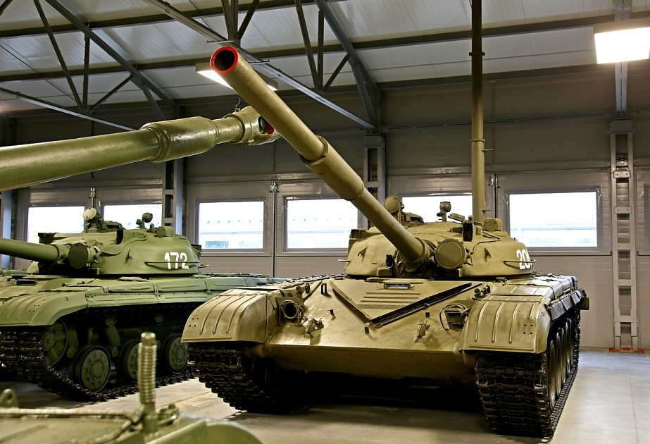
т - 80
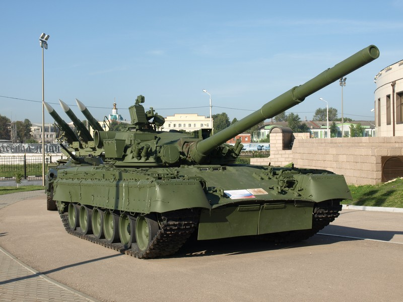
Т-80 — советский основной боевой танк, созданный в 1970-х годах и ставший первым в мире серийным танком с газотурбинным двигателем. Это обеспечивало ему высокую удельную мощность, отличную динамику разгона, лёгкий пуск в сильный мороз и низкий уровень шума. Экипаж — 3 человека, боевая масса — около 42–46 тонн.
Вооружение — 125-мм гладкоствольная пушка 2А46 с автоматом заряжания, комбинированная броня, возможна установка динамической защиты. Скорость — до 70 км/ч по шоссе. Т-80 поступил на вооружение в элитные соединения, но оказался дорогим и требовательным в эксплуатации. На его базе созданы модификации Т-80У, Т-80УД, а также украинский Т-84. Т-80 участвовал в Чеченских кампаниях и других конфликтах, а в современной российской армии ограниченно используется наряду с модернизированными Т-72 и Т-90.
т - 80у
Т-80У — советский и российский основной боевой танк, созданный в середине 1980-х как глубокая модернизация Т-80. Он получил новые системы управления огнём (1А45 «Иртыш»), более мощную комбинированную броню с встроенной динамической защитой «Контакт-5» (первый в мире серийный танк с такой защитой) и улучшенный газотурбинный двигатель ГТД-1250 мощностью 1250 л.с. Экипаж — 3 человека, боевая масса — около 46 тонн.
Вооружение — 125-мм гладкоствольная пушка 2А46М-1, автомат заряжания, пуск ракеты 9М119 «Рефлекс» через ствол. Скорость — до 70 км/ч. Т-80У сочетает подвижность газотурбинного двигателя с мощной бронезащитой, считается одной из лучших модификаций «восьмидесятки». Он состоял на вооружении элитных частей, но из-за высокой стоимости и сложности уступил место более экономичным Т-90.
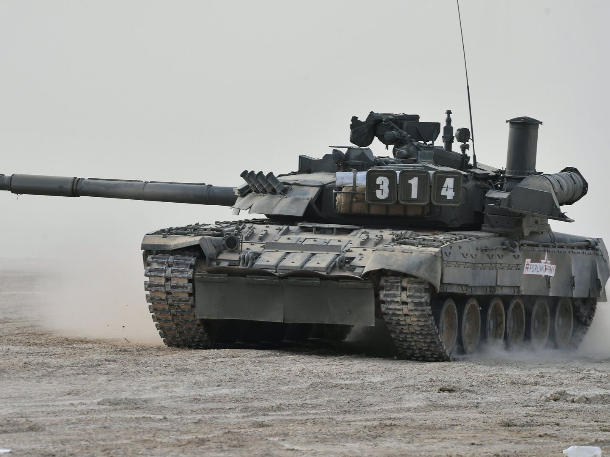
т - 90
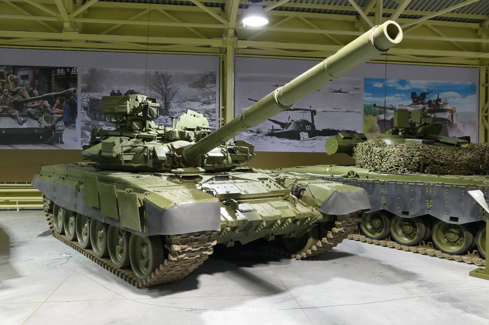
Т-90 — российский основной боевой танк, созданный в начале 1990-х. Разработка велась ещё в СССР как глубокая модернизация Т-72Б («Объект 188»). Танк получил новую сварную башню с комбинированной бронёй, комплекс «Штора-1» и дизельный двигатель В-92С2. Экипаж — 3 человека, масса — около 46–48 тонн.
Вооружение — 125-мм гладкоствольная пушка 2А46М-5 с автоматом заряжания, возможность стрельбы управляемыми ракетами 9М119М «Инвар» через ствол. Скорость — до 65 км/ч. Т-90 стал первым российским танком, получившим экспортный успех (вариант Т-90С). Он участвовал в боевых действиях в Сирии и других конфликтах. На смену базовому Т-90 пришли более совершенные модификации Т-90М «Прорыв» и Т-90МС.
т - 90а
Т-90А — российский основной боевой танк, созданный в начале 2000-х годов как модернизация базового Т-90. Главным отличием стала новая сварная башня с комбинированной бронёй улучшенной формы (вместо литой), а также установка автоматизированной системы управления огнём и более мощного двигателя В-92С2 (1000 л.с.). Экипаж — 3 человека, боевая масса — около 46,5 тонн.
Вооружение — 125-мм гладкоствольная пушка 2А46М-5 с автоматом заряжания, возможность стрельбы управляемыми ракетами 9М119М «Инвар», спаренный и зенитный пулемёты. Скорость — до 65 км/ч. Т-90А стал самой массовой модификацией семейства Т-90 в российской армии и активно использовался в учениях и боевых действиях, включая операцию в Сирии. Позже его сменил более совершенный Т-90М «Прорыв».
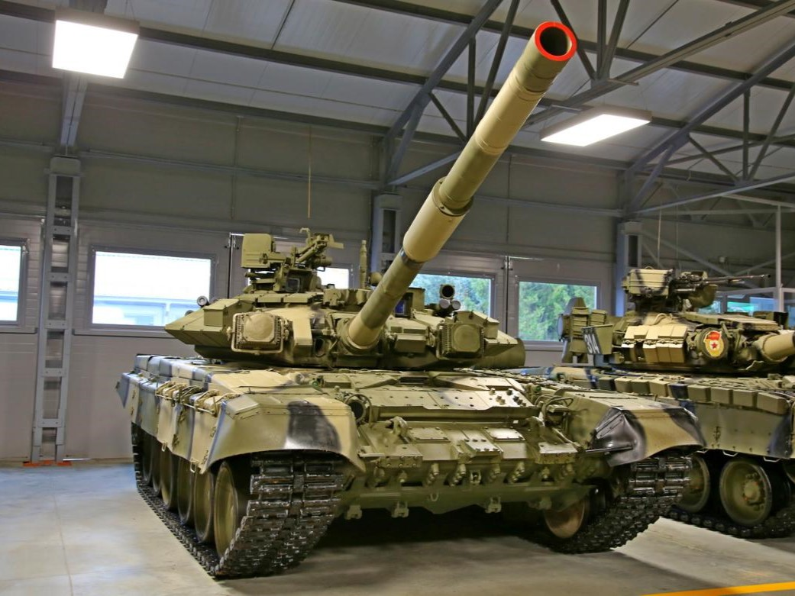